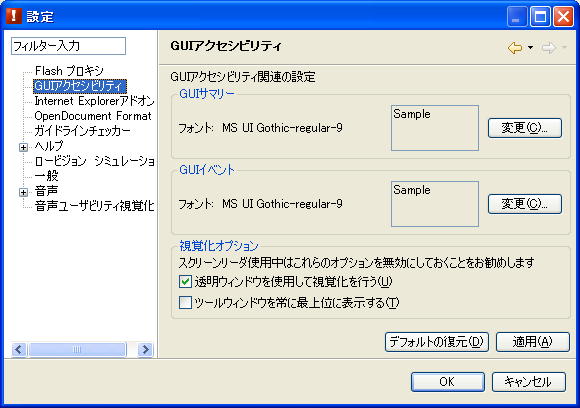
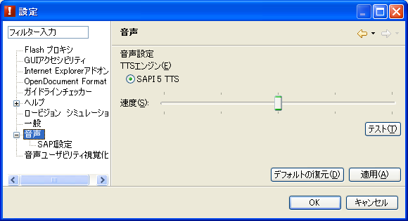
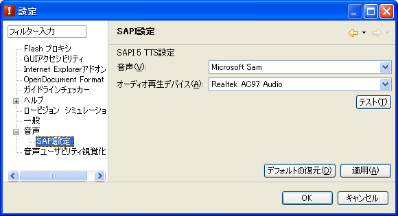
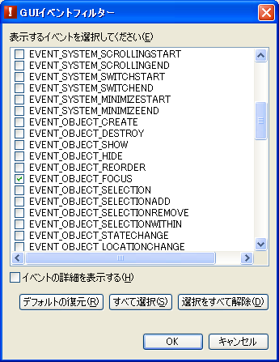

GUI アクセシビリティモード設定パネル
GUI アクセシビリティ設定
GUI アクセシビリティモードにおける画面表示を設定するパネルです（図1）。

図1. GUIアクセシビリティ設定パネル
各項目の詳細は、以下のとおりです。
- GUI サマリー/フォント:
- GUI サマリービューで使用するフォントのサイズ、スタイルを設定します。
- GUI イベント/フォント:
- GUI イベントビューで使用するフォントのサイズ、スタイルを設定します。
- 透明ウィンドウを使用して視覚化を行う:
- このチェックボックスをオンにすると、透明なウィンドウを画面全体に表示してハイライト表示やアイコン表示を行います。
注: スクリーンリーダ使用中は、この設定をオフにしておくことをお勧めします。
- ツールウィンドウを常に最上位に表示する:
- このチェックボックスをオンにすると、aDesigner を外部アプリケーションより上位に表示します。この機能は、対象ウィンドウメニューの「常に最上位に表示する」と同じ機能です。
注: スクリーンリーダ使用中は、この設定をオフにしておくことをお勧めします。
音声設定
音声出力の基本設定を行う設定パネルです（図2）。使用する音声合成エンジン、および、音声出力速度の設定を行います。音声合成エンジンごとに異なる設定に関しては、それぞれの音声合成エンジンの設定パネルを利用します。

図2. 音声設定パネル
各項目の詳細は、以下のとおりです。
- TTS エンジン:
- 音声合成 (Text-To-Speech) エンジンを選択します。
- 速度:
- 音声再生速度を設定します。スライダを左に動かすと遅くなり、右に動かすと速くなります。実際の音声再生速度は音声合成エンジンによって異なります。
- テスト:
- 設定した音声再生速度を確認するためのテスト音声を再生します。TTS エンジンを切り替えた場合は、先に 「適用」 ボタンを選択してから 「テスト」 ボタンを選択します。
SAPI 設定
aDesigner には、Microsoft® Speech API (SAPI) 5.0 対応の音声合成エンジンを利用して音声出力を行う機能が含まれています。音声合成エンジンそのものは aDesigner には含まれていませんので別途入手してください。

図3. SAPI 設定パネル
各項目の詳細は、以下のとおりです。
- 音声:
- 使用する音声の名前を選択します。
- オーディオ再生デバイス:
- 音声出力を行うオーディオ再生デバイスを選択します。
- テスト:
- 設定を確認するためのテスト音声を再生します。
GUI イベントフィルター設定
GUI イベントビューで表示される内容を設定するためのダイアログです（図4）。GUI イベントビューのコンテキストメニュー (Ctrl+F10) から 「フィルター」 メニューから開きます。

図4. GUI イベントフィルター設定パネル
各項目の詳細は、以下のとおりです。
- 表示するイベント:
- どのイベントを監視して GUI イベントビューに表示するかを指定します。起動時には EVEN_OBJECT_FOCUS が選択されており、フォーカス移動を表示するようになっています。
- イベントの詳細を表示する:
- このチェックボックスをオンにすると、テキスト情報に加えてイベント番号、accName、accRole, accState 情報を表示します。
インデックスに戻る
Microsoft, Windows, Windows NT および Windowsロゴは Microsoft Corporationの米国およびその他の国における商標。